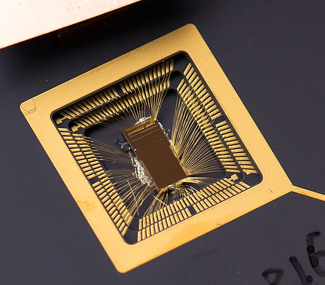
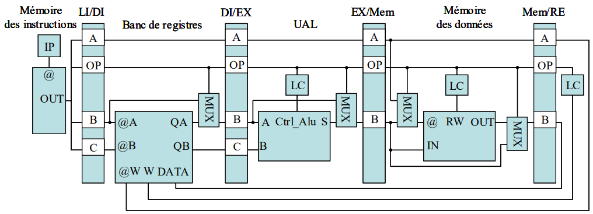
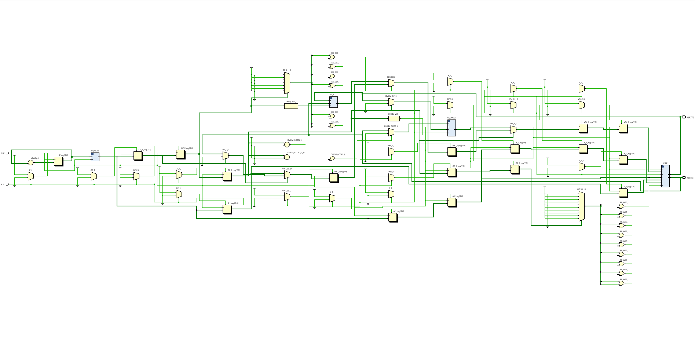
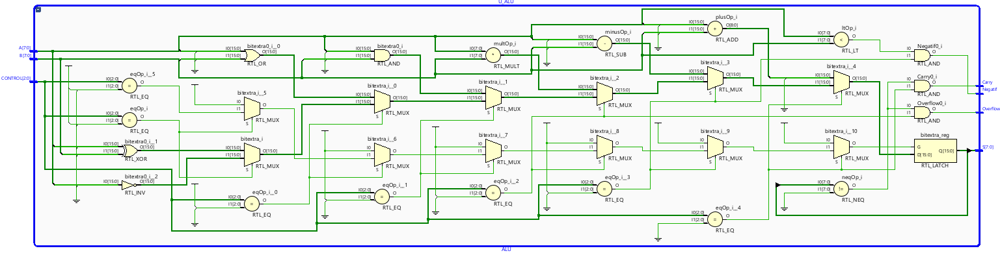
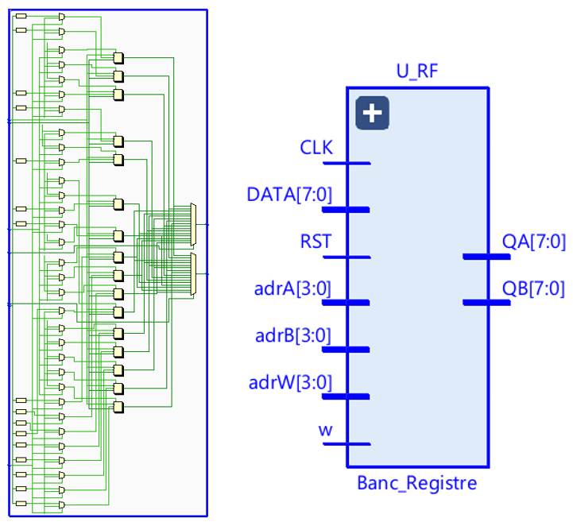
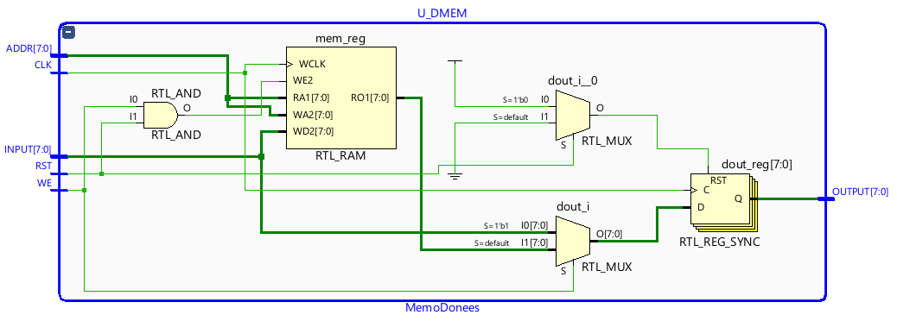
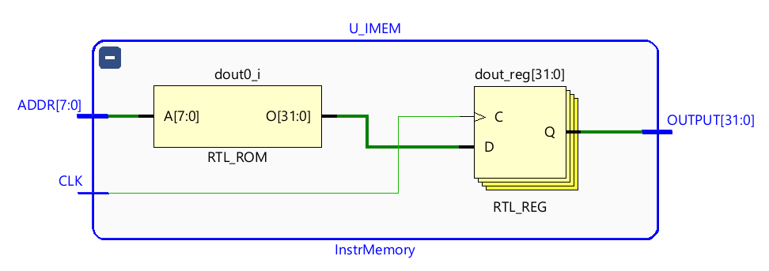
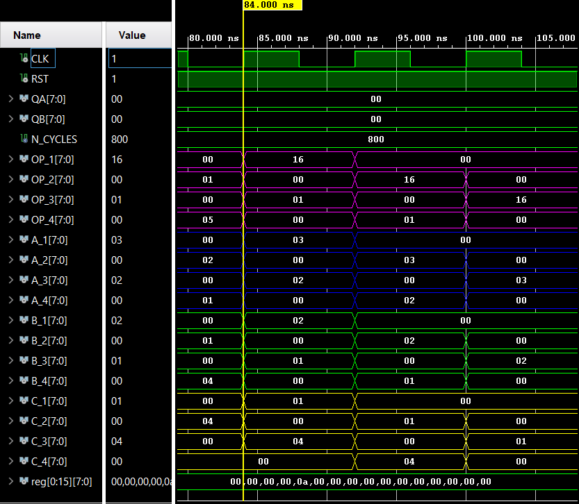
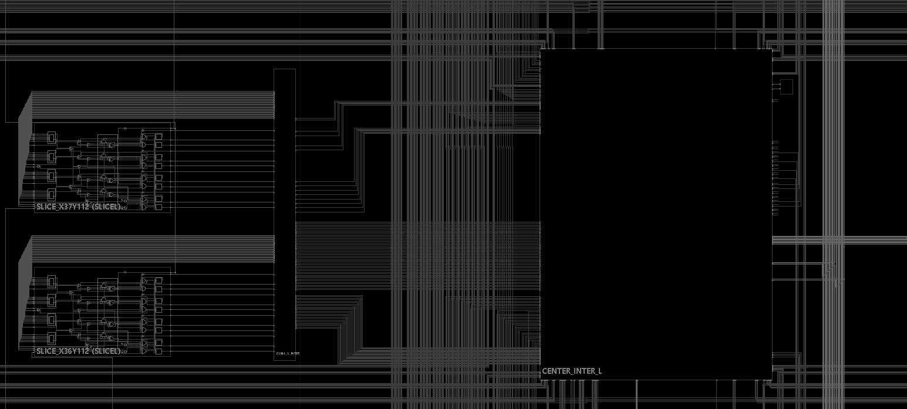
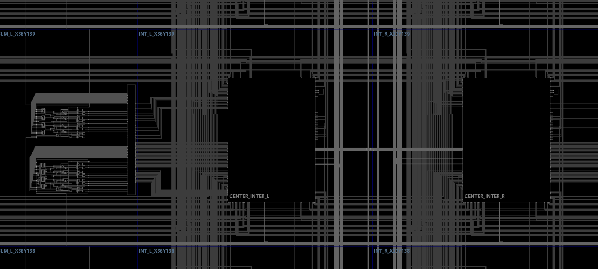

Design Philosophy: Silicon-Disciplined RTL
Microarchitecture choices were treated as implementation-bound decisions shaped by routing, clocks, fanout, and critical paths.
Each stage owns explicit logic and synchronous state boundaries to avoid timing ambiguity.
The RTL was structured for deterministic behavior and survivability across synthesis and place-and-route.

Figure 1 — Design intent aligned with implementation reality.

Figure 2 — Five-stage datapath and control partitioning.
Pipeline Contract: Five-Stage Datapath Partitioning
The datapath is partitioned into LI / DI / EX / MEM / ER stages with clear responsibilities.
Pipeline registers are explicitly inserted at each stage boundary.
Load/Store paths are separated from compute paths with predictable stage latency.
FPGA Deployment Platform (Basys 3 / Artix-7)
Basys 3 provides realistic clocking infrastructure, BRAM/DSP resources, and enough fabric for constrained implementation.
It serves as the toolflow endpoint from synthesis to place-and-route under real constraints.
Bring-up stays deterministic through fully synchronous design assumptions.
Figure 3 — Target FPGA platform for implementation closure.

Figure 4 — Top-level decomposition and interface ownership.
Top-Level Integration: RTL Decomposition and Signal Ownership
The top level decomposes into ALU, register file, instruction memory, data memory, and control.
Control is stage-local to keep fanout bounded and timing pressure contained.
The structure is fully synthesizable with no ambiguous combinational feedback loops.
Execution Core: ALU + Flag Semantics
Add/sub datapaths and operation muxing depth are the primary EX-stage timing risk.
MUL operations are resource-disciplined and mapped to DSP blocks where applicable.
N / C / O flags are produced deterministically and aligned with commit semantics.

Figure 5 — Execution core and deterministic flag generation.

Figure 6 — Register file with write collision bypass behavior.
Register File: Dual-Read, Single-Write with Collision Bypass
The register file implements 16×8 storage with 2R1W access.
A same-cycle RAW collision path applies write-first bypass behavior.
This bypass lowers bubble insertion and reduces hazard pressure.
Memory Subsystem: Synchronous DMEM (Load/Store Boundary)
Data memory follows synchronous access discipline for predictable behavior.
Latency is deterministic and inference is FPGA-friendly.
Load/Store logic remains cleanly separated from compute operations.

Figure 7 — DMEM organization at the Load/Store boundary.

Figure 8 — IMEM organization with stable instruction image.
Instruction Fetch: ROM-like IMEM and Stable Program Image
Instruction memory exposes a stable program image with synchronous readout.
Fetch behavior is consistent with pipeline timing assumptions.
The model stays clear for both simulation intent and synthesis mapping.
Waveform-Level Verification: Stage-by-Stage Proof
The testbench checks stage propagation, commit timing, and Load/Store correctness.
Waveforms provide cycle-accurate visibility into hazards and control decisions.
Verification evidence anchors the architectural contract to observed behavior.

Figure 9 — Testbench waveforms proving stage-level behavior.

Figure 10 — Post-implementation mapping and locality check.
Physical Realization: Post-Implementation FPGA Mapping
Placement and routing were reviewed for congestion, locality, and structural cleanliness.
The view confirms the RTL remains coherent after tool transformations.
EX depth and control fanout typically bound fMAX.
Second Region View: Routing Density and Floorplan Distribution
This second region corroborates routing density and floorplan distribution.
It highlights whether the design is tool-hostile or structurally disciplined.
The result reinforces a hardware-is-the-truth validation posture.

Figure 11 — Additional floorplan region for routing density assessment.
Deliverables
This page summarizes the implementation. The PDF captures full architecture, verification traces, and FPGA implementation evidence.